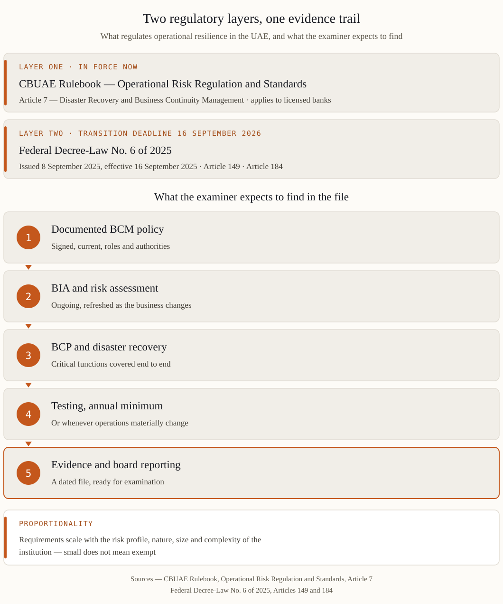

The two layers you are regulated by
Layer one: the CBUAE Rulebook. The Operational Risk Regulation and Standards apply to licensed banks and set explicit requirements for business continuity. Article 7 — Disaster Recovery and Business Continuity Management — is the operative text: a documented BCM policy with roles and authorities, ongoing business impact analysis and risk assessment, a documented business continuity plan, and testing at least annually or whenever operations materially change. The requirements scale with the risk profile, nature, size and complexity of the institution.
Layer two: the new Central Bank law. Federal Decree-Law No. 6 of 2025, issued on 8 September 2025 and effective from 16 September 2025, replaced the 2018 Central Bank law and the 2023 insurance law in one consolidated framework. It broadens who is in scope — banks, insurers, payment providers and technology enablers — reinforces supervision and examination powers, and (Article 149) mandates fraud prevention mechanisms and prompt customer notification of security breaches.
Article 184 gives in-scope entities a one-year transitional period — until 16 September 2026 — to regularise their status under the new law. That date is the anchor of the regulatory year. See our countdown plan.
What Article 7 requires, in practice
| Requirement | What the supervisor expects to see |
|---|---|
| Documented BCM policy | Objectives, approach, and named roles with authority to act — signed, current, known to the people in it |
| BIA and risk assessment, ongoing | Critical business functions identified, disruption impact assessed over time — refreshed, not a 2022 artefact |
| Documented BCP | A plan that meets the policy's objectives and covers critical functions end to end |
| Annual testing minimum | Evidence that staff can execute contingency plans and that recovery objectives and timeframes are actually met |
| Disaster recovery | Technology recovery arrangements that limit losses in severe disruption |
| Proportionality | Arrangements commensurate with your size and complexity — small does not mean exempt, it means right-sized |
Two failure patterns dominate supervisory findings across the region. First, testing that proves nothing: a tabletop walkthrough with no findings, no timings, no evidence recovery objectives were met. Second, BIA as an archive: impact analysis done once, while the business changed underneath it. Both are visible to an examiner within an hour.

Who is in scope
- Banks — the full Rulebook operational risk framework applies, including Article 7.
- Insurers — consolidated under the new law; resilience expectations follow supervision.
- Payment providers and fintech / technology enablers — newly consolidated in the 2025 framework; if you are in the transaction chain, resilience questions reach you.
- Critical suppliers to all of the above — outsourcing oversight makes your continuity part of your client's compliance file.
A pragmatic compliance path
- 1 · Gap assessment against Article 7 and resilience expectations. 2-3 weeks, every gap priced in downtime and finding-risk terms.
- 2 · Refresh the BIA. Critical functions, impact over time, recovery objectives your current arrangements can really meet.
- 3 · Fix the plan, not the binder. First-hours authority, communication trees, workarounds, technology recovery — short and executable.
- 4 · Test like an examiner. A realistic scenario, timed, with findings and closed actions. This single artefact answers most supervisory questions.
- 5 · Report to the board. Resilience metrics the board sees monthly — see our board reporting guide.
Frequently asked questions
What exactly changes on 16 September 2026?
Article 184 of Decree-Law 6/2025 ends the one-year transitional period: entities newly in scope or required to make changes must have regularised licensing and compliance by that date, subject to CBUAE discretion to extend. Waiting for an extension is not a strategy.
We are a small institution. Do the BCM requirements really apply?
Yes — proportionally. The Rulebook explicitly scales requirements to the risk profile, nature, size and complexity of the business. A small institution needs a smaller, but still real and tested, system.
How does this relate to NCEMA 7000?
NCEMA 7000 is the national BCM standard; CBUAE requirements are sector regulation for financial institutions. The disciplines overlap heavily — one well-built BCM system, properly documented, serves both. See our NCEMA 7000 guide.
What evidence should we have ready for an examination?
The signed BCM policy, current BIA outputs, the BCP, the last test report with timings and findings, closed-action records, and board reporting on resilience. Dated documents; interviews will verify people know their roles.
Sources: CBUAE Rulebook — Operational Risk Regulation and Standards, Article 7 (Disaster Recovery and Business Continuity Management), rulebook.centralbank.ae · Federal Decree-Law No. 6 of 2025 (issued 8 September 2025), uaelegislation.gov.ae · legal analyses by White & Case, Addleshaw Goddard, Ashurst, 2025.